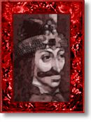

| prince |
| home page |
|  | I am not sure if this work has ever been translated into English. . About Vlad the Impaler (the man not the hamster) Vlad's Interesting yet Educational Page Vlad the Prince of Wallachia The word Voevod means Warlord-Prince. For those of you who arent familiar with the historical figure of Vlad the Impaler, he was the prince of Wallachia during the time of the Ottoman Empire's attempts to take over parts of Eastern Europe in the 1400's. He helped John Hunyadi, the white knight, to defend their homelands from the turkish advances. |
|
Thanks and remember, more links will be added once they are found. . - 1447) Vlad Dracul was the father of Vlad the Impaler (1430-1477), the person who has been identifed as the historical Dracula. He was the illegitimate son of Prince Mircea, the ruler of Wallachia, that area of present-day Romania south of teh Carpathian Mountains. His mother migh have been Princess Mara of the Tomaj family of Hungary. |